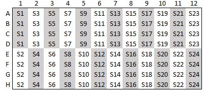
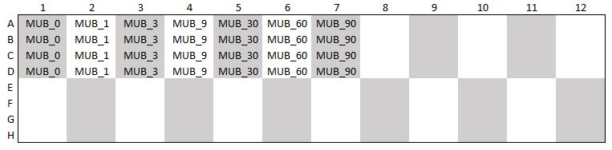

Hydrolytic enzyme assay for soil and litter
This protocol describes how to estimate potential activities of extracellular hydrolytic enzymes using a fluorescence based, end-point analysis, method outlined in Saiya-Cork, Sinsabaugh, and Zak (2002). In short, soil or litter suspensions are incubated in a solution containing a substrate that can be hydrolyzed by the enzyme you are targeting, see Table 1. At the end of the incubation period, the reaction is stopped by adding NaOH which raises the pH and the hydrolyzed substrate starts to fluoresce. You measure fluorescence on a fluorescence spectrometer, and use standard curves Section 3.3.2 to convert fluorescence to concentrations of product formed (as a proxy for enzyme activity).
1 Before starting the assay
You need to prepare buffer solutions, substrate solutions and stop solutions before starting the assay, see Section 3 for details and storage times. The preparation of all solutions is quite time consuming so allocate one day for it.
You also need to prepare the soil suspensions Section 3.5 in advance. Previous versions of this protocol has said that suspensions should be prepared on the day of the assay but the suspensions seem to be stable for at least a week, so they can be prepared in advance. It is, however, always a good idea to compare activities from a freshly made suspension with a stored one to optimize storage for your particular soil type.
2 Doing the assay
The assay is done in black 96-well flat-bottom microplates with four technical replicates of each soil suspension (24 samples/plate); see Figure 1. Prepare three identical plates with soil suspensions; one for doing the incubation, one fluorescence control Section 2.1 and one quenching control Section 2.2.
- Pipette 200 µl of the soil suspension into each well (4 replicates/sample)
- Pipette 50 µl of enzyme substrate into each well (use multi-channel pipette)
- Incubate plate in darkness (cover with aluminium foil)
- Stop the reaction by adding 10 µl of 0.5 M NaOH
- Measure fluorescence using the following settings:
- Excitation wavelength = 365 nm
- Excitation slit = 2.5
- Emission wavelength = 450 nm
- Emission slit = 2.5
- Emission filter = 390 nm cut off
- Number of measurement cycles = 1
- Read time for each well = 1 sec
Alteration fluorescence control:
- Stop reaction immediately after step 2
Alteration quenching control:
- Add MUB standard substrate, same concentration as one point from the standard curve (e.g. 9 µM) instead of the enzyme substrate in step 2. Then follow point 3-5.
2.1 Fluorescence control
The fluorescence control is used to control for any background fluorescence in the soil suspension, by stopping the reaction immediately after adding the enzyme substrate you can measure fluorescence at T0. This value is then subtracted from the fluorescence in the incubated sample to calculate “net”-fluorescence:
\[ fluorescence_{net} = incubated - T_0 \]
Note: In previous versions of the protocol, a heated (>90℃) sub-sample has been used as a fluorescence control instead of using the T0 approach outlined in this version. The reason for this is some observations of increased fluorescence after heating, relative to to the non-heated incubation, especially when working with soils with moderate to high mineral content.
The T0 approach could, however, be replaced by a heated control that is incubated for the same amount of time as the non-heated sample.
2.2 Quenching control
Quenching is a form of inhibition of fluorescence (e.g. caused by complex formation with the soil in the suspension). You need to test the level of quenching to determine whether your measurements are “ok”. You do this by incubating the soil suspensions with a standard solution of MUB or MUC (which are the fluorescent components in the enzyme substrates. A 30-60 min incubation period is usually enough. Calculate the quenching ratio:
\[ quenching = incubated/MUB_{standard} \]
If the value is >1, you have no quenching and if it is <1 there is some quenching. Usually, a value <0.6 means that there is too much quenching and you may need to dilute the sample and re-run the incubation with a lower soil concentration.
You could also correct for quenching:
\[ fluorescence_{corrected} = fluorescence_{net} / quenching \]
2.3 Standard curve
The standard solutions of MUB (for CBH, BG, NAG, CiBH, aP, and BXD) and MUC (for LAP) are used to make standard curves to be able to convert fluorescence to amounts of formed product (as a proxy for enzyme activity). You only have to do the standard curve once per “assay round”. See Figure 2 for plate setup.
2.4 Incubation times
Times for incubations have to be optimized for your particular soil type, and also varies between the different hydrolytic enzymes.
3 Preparation of solutions
3.1 Sodium acetate buffer (50 mM)
Sodium acetate buffer is used for the soil suspensions and to dissolve the fluorescent substrates ?@sec-fluo-subs. Adjust the pH with glacial acetic acid to resemble the pH of the soil (pH ≈ 5 for forest O horizon). pH should be below 7.
To prepare 1 l of buffer:
Dissolve 4.1015 g of sodium acetate in diH2O
Adjust pH with glacial acetic acid
Storage: +4℃. The buffer can be uses at least a week after preparation.
3.2 Fluorescent substrates (200 µM)
Dissolve the substrates in 50 mM sodium acetate buffer ?@sec-sodium_acetate. The substrates are difficult to dissolve so you may need to use a water bath at moderate heat and shake them from time to time, or use a sonicator. Calculate how much of each substrate solution you will need for all your samples and prepare solutions in bulk. You can prepare aliquots with enough volume for one or two plates (~ 5 ml/plate) and store them at -20℃ (for several months).
Storage: -20℃ (at least two months).
Formula for calculating amounts of substrate needed:
\[ g_{substrate} = molarity \times volume \times molecular weight \]
CBH (4-MUB-\(\beta\)-D-cellobioside): 1.000 mg/10 ml acetate buffer
BG (4-MUB-\(\beta\)-D-glucopyranoside): 0.676 mg/10 ml acetate buffer
NAG (4-MUB-N-acetyl-\(\beta\)-D-glucosaminide): 0.758 mg/10 ml acetate buffer
CiBH (4-MUB-\(\beta\)-D-N-diacetyl-chitobioside): 1.165 mg/10 ml acetate buffer
aP (4-MUB-phosphate): 0.512 mg/10 ml acetate buffer
BXD (4-MUB-\(\beta\)-D-xylopyranoside): 0.616 mg/10 ml acetate buffer
LAP (L-leucine-7-amido-4-MUC-hydrochloride): 0.649 mg/10 ml acetate buffer
3.3 Standard solutions
3.3.1 Stock solution (1 mM)
MUB (4-methylumbelliferone): 8.8085 mg/50 ml acetate buffer
MUC (7-amino-4-methylcoumarin): 8.759 mg/50 ml acetate buffer
Remember: one point of the standard curve (e.g. 9 µM) should be used for the quenching control, therefore you will need to prepare a larger volume of that concentration.
Substrates are difficult to dissolve. It may be good to stir them while heating.
Storage: -20℃ for at least two months
3.3.2 Standard curve
100 µM = 3 ml of stock (1 mM) in 27 ml acetate buffer
90 µM = 27 ml of 100 µM in 3 ml acetate buffer
60 µM = 20 ml of 90 µM in 10 ml acetate buffer
30 µM = 15 ml of 60 µM in 15 ml acetate buffer
9 µM = 9 ml of 30 µM in 21 ml acetate buffer
3 µM = 10 ml of 9 µM in 20 ml acetate buffer
1 µM = 10 ml of 3 µM in 20 ml acetate buffer
0 µM = acetate buffer
3.4 Stop solution, NaOH (0.5 M)
Dissolve 1 g NaOH in 50 ml sodium acetate buffer
Storage: +4℃
3.5 Soil suspension
Soil suspensions are done by mixing soil with sodium acetate buffer into a homogeneous ‘soil-slurry’. In, the original protocol by Saiya-Cork, Sinsabaugh, and Zak (2002), the assay is done within 48h of collection and fresh forest floor material is homogenized in the buffer with a mixer.
The assay also works with freshly frozen or freeze-dried soils. Some caution should be taken when assaying air dried soil since there will be some biologic activity during drying at room temperature. Drying in heat (>70℃) may cause denaturation of enzymes.
Soil concentrations in the suspension needs to be optimized for each soil type, but a rule of thumb for organic forest soils is 0.001 gOM/ml. To get a representative sample, you can start out by doing a high concentration slurry and then dilute it to an appropriate final concentration. Alternatively, homogenize the soil in a large volume of sodium acetate buffer.
Examples:
Homogenise 0.5 g of soil in 500 ml sodium acetate buffer.
Homogenise 5 g of soil in 500 ml sodium acetate buffer and dilute to final concentration (x10 to get 0.001 g/ml).
Homogenization methods may differ depending on soil type and how the sample has been processed prior to measuring enzyme activities. Mechanical homogenization of large particles can be done by using e.g. a stick blender or another type of mixer. For samples that have been homogenized before (e.g. milled), it may be enough with shaking/vortexing to make a homogeneous suspension.
4 Enzymes and substrates
| Enzyme | Abbreviation | Function | Substrate |
|---|---|---|---|
| \(\beta\)-D-Cellobiohydrolase | CBH | Releases cellobiose from cellulose | 4-MUB-\(\beta\)-D-cellobioside |
| \(\beta\)-Glucosidase | BG | Releases glucose from cellulose and cellobiose | 4-MUB-\(\beta\)-D-glucopyranoside |
| N-acetyl-\(\beta\)-D-glucosaminidase | NAG | Releases glucosamine from chitin and similar polymers. Indicator of organic N turnover (and microbial/fungal N recycling) | 4-MUB-N-acetyl-\(\beta\)-D-glucosaminide |
| Chitobiohydrolase | CiBH | Cleaves disaccharides of glucosamine from the ends of chitin chains | 4-MUB-\(\beta\)-D-N-diacetyl-chitobioside |
| Acid phosphatase | aP | Releases inorganic phosphatase from organic matter; phosphorus mineralization: organic phosphorus hydrolysis | 4-MUB-phosphate |
| \(\beta\)-Xylosidase | BXD | Degrades the xylose component of hemicellulose | 4-MUB-\(\beta\)-D-xylopyranoside |
| Leucine aminopeptidase | LAP | Releases amino acids from protein; catalyzes the hydrolysis of leucine residues at the N-terminus of peptides and proteins; organic nitrogen polypeptide hydrolysis | L-leucine-7-amido-4-MUC-hydrochloride |
5 Plate setups


6 Chemical information, risk assessment
Although the chemicals used in the assay are, generally, not hazardous, regular laboratory caution should be taken. Wear lab coat and gloves when handling the chemicals and use eye protection when preparing the NaOH solution. It is also advisable to work in a fume hood when adjusting the pH of the sodium acetate buffer with glacial acetic acid.
Look up local rules/regulations for how to dispose of used and leftover chemicals.
| Chemical | Formula | CAS-number | Storage conditions | Hazards |
|---|---|---|---|---|
| 4-MUB-\(\beta\)-D-cellobioside | C22H28O13 | 72626-61-0 | 2-8℃ | None |
| 4-MUB-\(\beta\)-D-glucopyranoside | C16H18O8 | 18997-57-4 | -20℃ | None |
| 4-MUB-N-acetyl-\(\beta\)-D-glucosaminide | C18H21NO8 | 37067-30-4 | -20℃ | None |
| 4-MUB-\(\beta\)-D-N-diacetyl-chitobioside | C26H34N2O13 · H2O | 53643-12-2 | -20℃ | None |
| 4-MUB-phosphate | C10H9O6P | 3368-04-5 | -20℃ | None |
| 4-MUB-\(\beta\)-D-xylopyranoside | C15H16O7 | 6734-333-4 | -20℃ | None |
| L-leucine-7-amido-4-MUC-hydrochloride | C16H20N2O3 · HCl | 62480-44-8 | -20℃ | None |
| 4-methylumbelliferone (MUB) | C10H8O3 | 90-33-5 | 2-8℃ | None |
| 7-amino-4-methylcoumarin (MUC) | C10H9NO2 | 26093-31-2 | 2-8℃ | None |
| Sodium acetate | C2H3NaO2 | 127-09-3 | Room temperature | None |
| Sodium hydroxide | NaOH | 1310-73-2 | Room temperature | Alkaline |
| Glacial acetic acid | C2H4O2 | 64-19-7 | Room temperature | Acid, flammable |